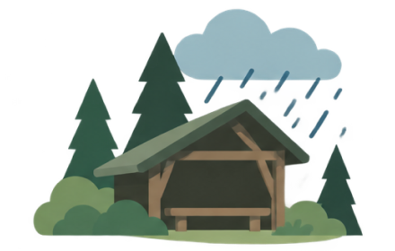
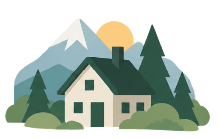
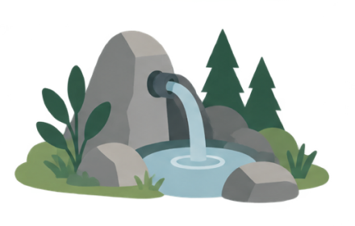
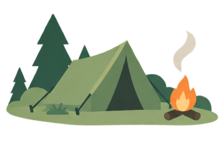

Hyc! Wszystko czego potrzebujesz na szlaku

Dopadła Cię ulewa lub szukasz miejsca na przerwę?
Jednym przyciskiem poprowadzimy cię do najbliższej wiaty po drodze lub w dowolnym kierunku

Szukasz taniego noclegu na jedną noc?
Tanie i polecane przez społeczność górską noclegi przy szlaku oraz w całej Polsce. M.in. zestawy na GSB, GSS, MSB, The Loop.

Skończyła Ci się woda lub zapasy?
Znajdź najbliższe źródła, sklepy i miejsca, w których je uzupełnisz

Szukasz miejsca na nocleg pod namiotem?
„Zanocuj w lesie”, miejsca biwakowe lasów państwowych, pola namiotowe i campingowe oraz punkty dodane przez społeczność
Potrzebujesz pomocy medycznej?
Znajdź najbliższą apteczkę na szlaku, placówkę ratownictwa lub aptekę
Najczęstsze pytania
Zebraliśmy odpowiedzi na najczęstsze pytania o Hyc! Jeśli czegoś tu nie znajdziesz, śmiało napisz do nas.
KontaktCzym jest Hyc?
Hyc! to aplikacja, która bez zatrzymywania się podczas marszu, jedną ręką pomaga znaleźć wszystko, czego potrzebujesz na szlaku. Prowadzi do najbliższego celu przed Tobą lub dookoła. Znajdziesz w niej między innymi schronienia, noclegi, miejsca na namiot, źródła wody, apteczki, restauracje i sklepy.
Możesz też swobodnie przeglądać mapę, wyszukiwać interesujące Cię miejsca i zapisywać je na później.
Czy aplikacja jest darmowa?
Tak. Wszystkie obecne funkcje Hyc! są i zawsze będą darmowe. W przyszłości planujemy rozbudowywać aplikację i mogą pojawić się dodatkowe, płatne funkcje.
Jaki obszar obejmuje Hyc?
Na ten moment Hyc! obejmuje całą Polskę oraz obszar do 50 km od polskiej granicy na terenie Czech i Słowacji. To dopiero początek. Z czasem będziemy rozszerzać mapę o kolejne państwa.
Jakie noclegi znajdę w aplikacji?
Znajdziesz tu wybrane przez nas niedrogie noclegi oraz miejsca polecane przez społeczność górską, szczególnie te położone przy szlakach, a także ogólnodostępne chatki górskie, bacówki i inne miejsca, w których można przenocować za darmo.
Skąd bierzemy informacje o miejscach?
Bazę budujemy na publicznie dostępnych źródłach, które łączymy i weryfikujemy. Dalej rozwija ją nasza społeczność. Nowe punkty mogą dodawać i aktualizować zarówno użytkownicy, jak i Skauci Hyc!, którzy od czasu do czasu biorą też udział w płatnych akcjach terenowych, sprawdzając miejsca na szlaku i dodając zdjęcia.
Chcesz zostać Skautem Hyc? Dołącz do społeczności tutaj.
Dołącz do Skautów Hyc!
Skauci Hyc! to osoby, które podczas wędrówek sprawdzają, uzupełniają i dodają punkty na szlaku. Dzięki temu pomagają kolejnym wędrowcom łatwiej i bezpieczniej przejść trasę.
Dołącz do Skautów